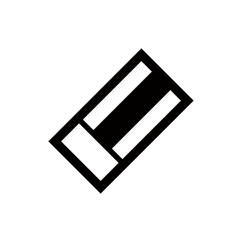

マインスイーパー改
配置
ランダム
運排除
運のみ
クラスター
フラクタル島
斜め禁止
縦横禁止
複製禁止
3連禁止
道
孤立禁止
大陸
稲妻
構造物
蜘蛛の巣
ペア
行・列固定
ブリッジ
3連のみ
4分割
3x3接続
色ごと
ぼっち
4近傍孤立
テトリスミノ
シグマ固まり
シグマ直線
行連結
探索
8方向(3×3)
8方向(5×5)
8方向(7×7)
8方向(3×3,トーラス)
ナイト
クイーン
クイーン(2)
十字架(1)
十字架(2)
十字架,8方向交互に
縦横に交互に
縦横,斜めに交互に
リング
菱形(2)
菱形(3)
全範囲
クイーン状に発見まで
波紋状に発見まで
三角状に発見まで(2)
地雷から地雷に接続
地雷数による波紋
地雷数による正方形(2)
地雷数による菱形(+2)
固まり検出α
直線状に発見までα
地雷数による波紋α
クイーン状に発見までα(2)
8方向(3×3,盲点)
十字架(2,盲点)
表示
総数
上位クエスチョン
下限クエスチョン
ファジー
色別の差
色別加重
固まり個数
余り3
余り10
割合
偶数
奇数
素数
素数以外
距離の合計
距離の積
2点からの距離
外周長
4方向の監視
上下の差
左右の差
秩序
周りの平均値
周りの中央値
10種ランダム
5種ランダム
2種ランダム
色別
固まり
固まり最大 最小
3区間まとめ表示
分解
真偽
複合
左右の監視
上下の監視
上下
左右
上下左右の差
縦横の距離
縦横の差
縦
横
地雷
ヒント率
0%
開始
ランダムシードで開始
ルールもランダムで開始
並び替え
標準
ジャンル
難易度
初心者
中級者
上級者
ランダムの一覧
セット
1
2
残り地雷:
0
未確定:
0
サイズ:
時間:
0
秒
シード
チートモード
ツール:

色:
太さ:
細
中
太
極太
選択色を全消し
全消し
試行中: 0 回
💥 GAME OVER 💥
同じシードでリトライ
違うシードでリトライ
🎉 YOU WIN! 🎉
同じシードでリトライ
違うシードでリトライ
地雷配置に失敗しました。設定を見直してください。